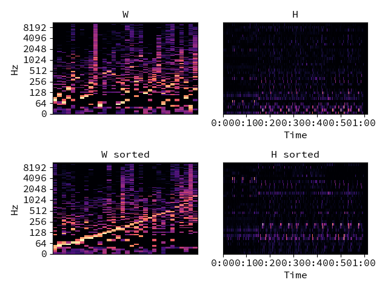

librosa.util.axis_sort¶
-
librosa.util.axis_sort(S, axis=-1, index=False, value=None)[source]¶ Sort an array along its rows or columns.
Parameters: S : np.ndarray [shape=(d, n)]
Array to be sorted
axis : int [scalar]
The axis along which to compute the sorting values
- axis=0 to sort rows by peak column index
- axis=1 to sort columns by peak row index
index : boolean [scalar]
If true, returns the index array as well as the permuted data.
value : function
function to return the index corresponding to the sort order. Default: np.argmax.
Returns: S_sort : np.ndarray [shape=(d, n)]
S with the columns or rows permuted in sorting order
idx : np.ndarray (optional) [shape=(d,) or (n,)]
If index == True, the sorting index used to permute S. Length of idx corresponds to the selected axis.
Raises: ParameterError
If S does not have exactly 2 dimensions (S.ndim != 2)
Examples
Visualize NMF output for a spectrogram S
>>> # Sort the columns of W by peak frequency bin >>> y, sr = librosa.load(librosa.util.example_audio_file()) >>> S = np.abs(librosa.stft(y)) >>> W, H = librosa.decompose.decompose(S, n_components=32) >>> W_sort = librosa.util.axis_sort(W)
Or sort by the lowest frequency bin
>>> W_sort = librosa.util.axis_sort(W, value=np.argmin)
Or sort the rows instead of the columns
>>> W_sort_rows = librosa.util.axis_sort(W, axis=0)
Get the sorting index also, and use it to permute the rows of H
>>> W_sort, idx = librosa.util.axis_sort(W, index=True) >>> H_sort = H[idx, :]
>>> import matplotlib.pyplot as plt >>> plt.figure() >>> plt.subplot(2, 2, 1) >>> librosa.display.specshow(librosa.amplitude_to_db(W, ref=np.max), ... y_axis='log') >>> plt.title('W') >>> plt.subplot(2, 2, 2) >>> librosa.display.specshow(H, x_axis='time') >>> plt.title('H') >>> plt.subplot(2, 2, 3) >>> librosa.display.specshow(librosa.amplitude_to_db(W_sort, ... ref=np.max), ... y_axis='log') >>> plt.title('W sorted') >>> plt.subplot(2, 2, 4) >>> librosa.display.specshow(H_sort, x_axis='time') >>> plt.title('H sorted') >>> plt.tight_layout()
